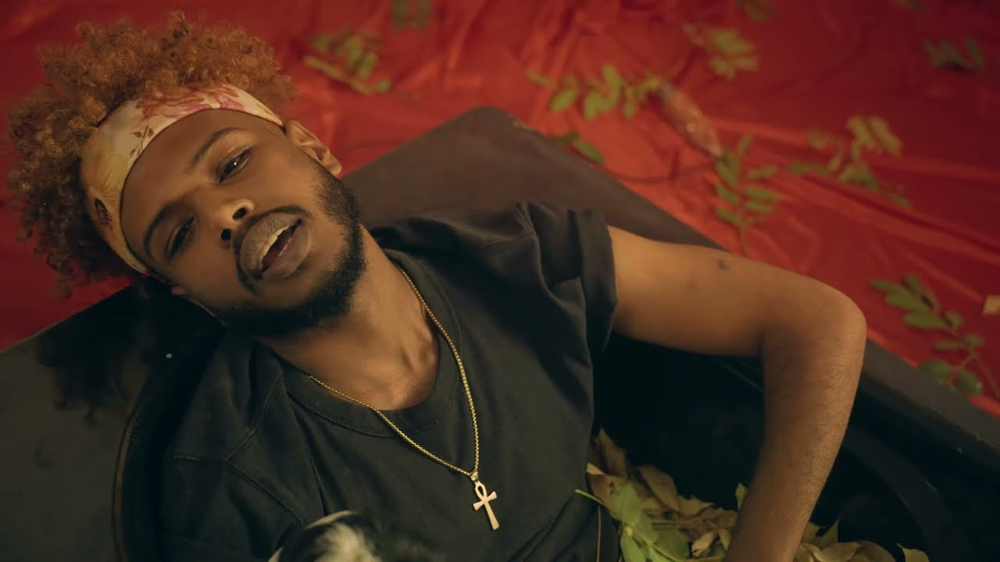

About the artist (soulja)
Soulja, a rising star in the Sudanese hip-hop scene, has quickly become known for his unique blend of music that reflects his diverse background and experiences. Born Usama 'Soulja' Ashraf, he made his official debut in 2020 with the track "Marrakesh," collaborating with fellow Sudanese artists O'D and RoTation. This debut set the stage for Soulja's rise, with subsequent releases like "Charleston" and "Bringi" gaining significant traction and millions of views and listens. Soulja's music resonates deeply with listeners, particularly for its reflection of the modern Sudanese experience, both at home and in the diaspora.
Soulja's music is marked by its eclecticism, drawing influences from his time spent in Malaysia and Saudi Arabia before moving to Cairo in 2021. His work aims to serve as a bridge between cultures, experiences, and people, fostering a sense of understanding and connection through music. Soulja's debut album, "Deja Vu," is a testament to this mission, weaving together a range of genres and topics that mirror his personal journey through significant life challenges, including war and displacement.
Soulja's sound is a fusion of his Sudanese roots with the various cultural influences he's encountered, constantly evolving as he explores new styles and genres. He values the connection with his listeners immensely, seeing his music as a way to maintain his ties to Sudan and to speak to those who share similar backgrounds and experiences. Beyond music, Soulja is interested in exploring other artistic avenues, including fashion, seeing art in any form as a powerful means of expression